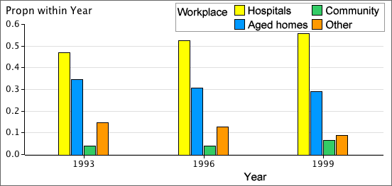
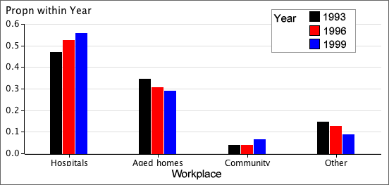

Proportions within groups
To compare the distributions of a categorical variable in different groups, it is best to examine the proportions within the groups — the cell frequencies divided by their group totals.
The table below shows the work settings of all enrolled nurses in Australia in 1993, 1996 and 1999.
| Workplace | |||||
|---|---|---|---|---|---|
| Year | Hospitals | Aged homes | Community | Other | Total |
| 1993 | 19,981 | 14,714 | 1,717 | 6,255 | 42,667 |
| 1996 | 20,367 | 11,899 | 1,571 | 4,860 | 38,697 |
| 1999 | 19,847 | 10,376 | 2,315 | 3,159 | 35,700 |
From the table of within-year percentages below, it is clearer that the percentage of nurses working in hospitals has increased and the percentage working in aged homes has decreased.
| Workplace | |||||
|---|---|---|---|---|---|
| Year | Hospitals | Aged homes | Community | Other | Total |
| 1993 | 46.8 | 34.5 | 4.0 | 14.7 | 100.0 |
| 1996 | 52.6 | 30.7 | 4.1 | 12.6 | 100.0 |
| 1999 | 55.6 | 29.1 | 6.5 | 08.8 | 100.0 |
Bar charts of proportions
Bar charts can be used to graphically compare groups and it is again best to use proportions within groups rather than raw frequencies, especially if the groups are of different sizes.

Clustering the bars
Each cluster of bars above is a valid bar chart for one group. Alternatively, the same bars can be clustered by the variable of interest:

This makes it easier to make comparisons between the groups.